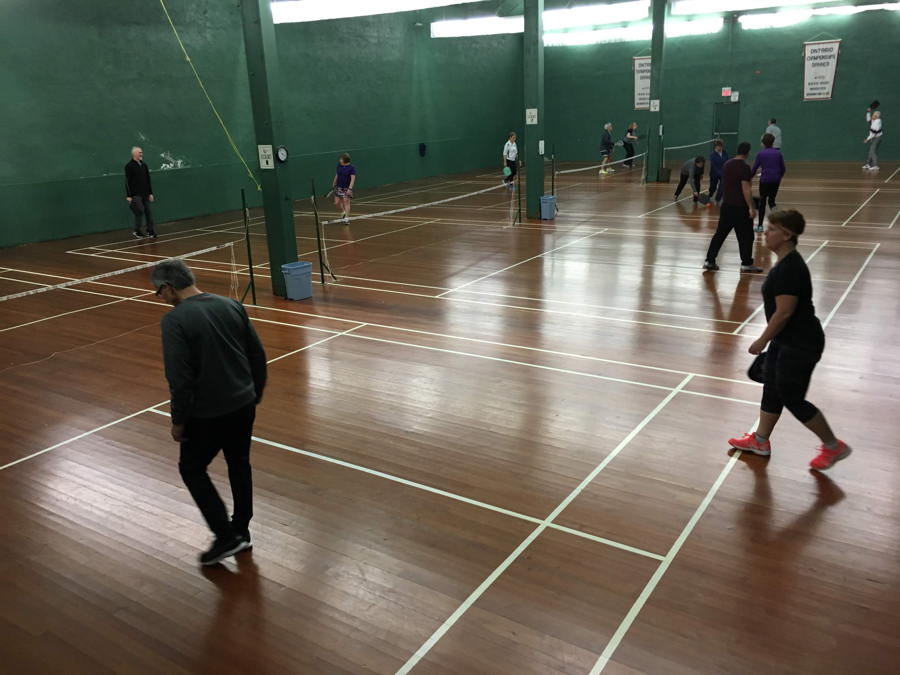
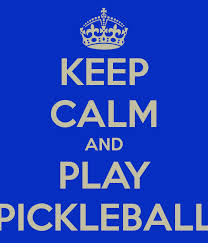

What Is Pickleball?
Pickleball is the fastest growing sport in Ontario! Pickleball combines the sports of badminton, tennis and ping pong. You play with a paddle similar to ping pong but larger and a wiffleball. The game is played on a badminton court and you lower the net to the height of a tennis net. Pickleball is played with similar rules to ping pong and you use a under hand serve. It's lots of fun especially when you try to put spin on the ball.
The name comes from the gentlemen Joel Pritchard who invented the game in 1965 in Washington State, who use to have a dog named Pickle. Every time the dog took off with the ball they would holler at Pickle to bring back the ball hence the name "pickleball". It is a sweet sport with a sour name!
Pickleball started in 2010 at the Woodstock Badminton Club located at 310 Hunter Street, where it is played by all age groups and skill levels throughout the year.
In the Spring, Summer and Fall, pickleball is also played at the free City of Woodstock operated outdoor pickleball courts located at 176 Park Row located 5 minutes away from the Club.
Everyone is welcome to come out and try one of North America's fastest growing sports! Pickleball is a great way to get active, keep active, and have fun at the same time. It has great aerobics value.
Please check under Information to see the weekly schedule when pickleball is played at the Woodstock Badminton Club and be sure to drop by to give it a try!
Feel free to email any pickleball questions to:
Email: info@woodstockpickleball.ca
